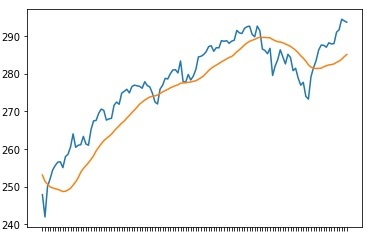

- 주식 투자관련 기술지표 정의/산출법(계산식)들을 정리해 본다.
- 참고도서: 퀀트 전략을 위한 인공지능 트레이닝
- 진척률(2021.04.25): 10%
목차
1 | 1.RA(이동평균션) : Standard deviation rolling average |
이동평균선
Pandas 구현
- 들쑥날쑥한 주가의 흐름을 몇일간의 평균적인 값으로 나타내는 지표를 이동평균선이라고 한다.
- 이동평균 구현 : rolling window를 정하고 평균을 계산
1
2
3
4
5price_df['center'] = price_df['Adj Close'].rolling(20).mean() # 이동평균선을 구한다.
import matplotlib.pyplot as plt
plt.plot(sample.index, sample['Adj Close'], label="Adj Close")
plt.plot(sample.index, sample['center'], label="center")
ta-lib로 적용
1
2
3
4
5
6
7
8
9
10# colab 설치
# (2020) https://stackoverflow.com/questions/49648391/how-to-install-ta-lib-in-google-colab
url = 'https://launchpad.net/~mario-mariomedina/+archive/ubuntu/talib/+files'
!wget $url/libta-lib0_0.4.0-oneiric1_amd64.deb -qO libta.deb
!wget $url/ta-lib0-dev_0.4.0-oneiric1_amd64.deb -qO ta.deb
!dpkg -i libta.deb ta.deb
!pip install ta-lib
import talib
sample['MA20'] = talib.SMA(sample['Adj Close'],timeperiod=20)